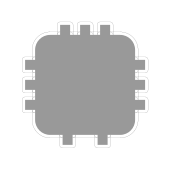
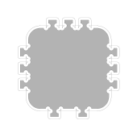

Burn correction¶
The burn correction – aka kerf – is done in two separate steps. The first mechanism is used during drawing. After rendering there is a post processing step that replaces the inverted arcs of the inner corners by Bezier loops that can be cut in a continous motion.
The first mechanism is integrated into the low level commands of Boxes.py. So for the most part developers do not need to care about it. Nevertheless they need to understand how it works to catch the places the do need to care.
Burn correction is done by increasing the radius of all outer corners. This moves all the straight lines outward by the same amount. This has the added benefit of not needing to change the length of the straight lines – making them independent of the adjacent angles. An issue arises when it comes to inner corners. If they do have a radius reducing it by the burn value does the right thing. But for small radii and sharp corners (radius zero) this results in a negative values. It turns out flipping over the arc for negative radii allows keeping the lengths of the straight lines unchanged. So this is what Boxes.py does:
This results in the straight lines touching the piece. This would lead to overcuts that are not as nice as proper dog bones as might be used by a dedicated CAM software. But as Boxes.py is meant to be used for laser cutting this deemed acceptable for a long time:
Programmer’s perspective¶
For this to work it is important that outside is drawn in a counter clock wise direction while holes are drawn in a clock wise direction.
boxes.Boxes.corner() adjusts the radius automatically
according to .burn. This propagates to higher level
functions. Parts shipped with Boxes.py do take the
burn out-set into account and execute callbacks at the correct position.
In case developers move to a feature inside of a part or executing
callbacks while implementing a part they need to be aware of the burn
correction. boxes.Boxes.cc() does correct for the out-set if
called without an y parameter. But if a value is given one has to
add self.burn to compensate. Note that the x value typically
does not have to be corrected as the callbacks are executed from right
underneath the part.
A similar approach is necessary when moving to a feature drawn inside the part without the use of callbacks. Here you typically have to correct for the out-set at the outside of the part and again for in-set of the hole one is about to cut. This can be done in x or y direction depending on whether the cut ist started vertical or horizontally.
Replacing the inverted arcs¶
The inverted arcs have several drawbacks. For one they remove more material than needed. This is not a big deal for laser cutters. But if the boxes are cut with a CNC milling machine that can be annoying. Another drawback is that the direction is reversed twice which requires the tool (typically the laser head) to come to a total stop.
To solve this issue all paths are scanned for intersecting lines that are connected by an inverted arc. There the lines are shortened to the intersection point and the arc is replaced by a Bezier loop that is continues the lines and loops on the outside of the corner. That way the path still removes additional material to make sure the full inner corner is cleared out. The current implementation uses the former end points of the lines as control points. This gives reasonable results but errs on the save side. The amount of material removed can probably be further optimized.